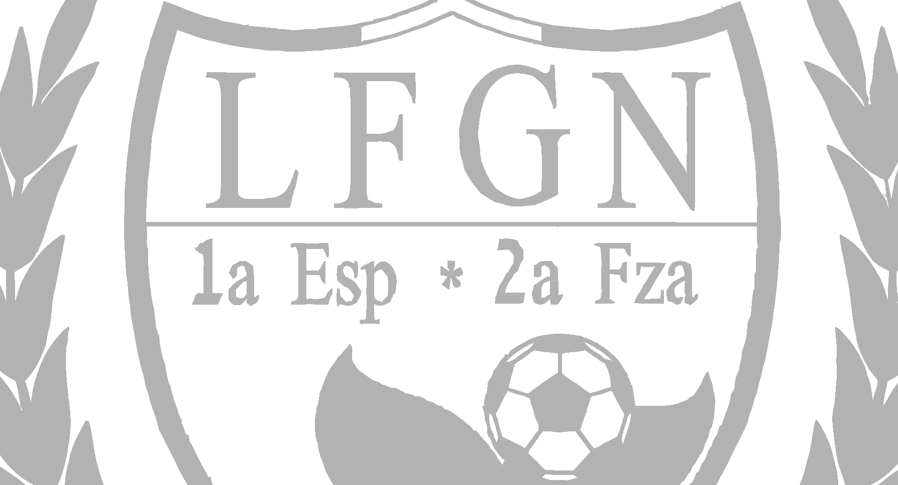

<div *ngIf="teams|async;let teams">
  <div *ngIf="teams?.length > 0; else noTeams">
    <button style="margin-left:10px;" mat-icon-button (click)="generateReport()" matTooltip="Generar reporte">
      <mat-icon aria-label="Example icon-button with a heart icon">assignment</mat-icon>
    </button><br>
    <div id="Rteams">
      <mat-card class="card" *ngFor="let team of teams">
        <div class="header-card">
          <div class="fabLogoTeam">
            
          </div>
          
        </div>
        <div class="body">
          {{team.Name}}
          <div class="buttons">
            <button mat-icon-button matTooltip="Eliminar" (click)="openDeleteDialog(team)">
              <mat-icon>delete</mat-icon>
            </button>
            <button mat-icon-button matTooltip="Editar" (click)="openEditDialog(team)">
              <mat-icon>edit</mat-icon>
            </button>
            <button mat-icon-button matTooltip="Información" (click)="onInformation(team)">
              <mat-icon>info</mat-icon>
            </button>
          </div>
        </div>
      </mat-card>
    </div>
  </div>
</div>
<ng-template #noTeams>
  <div class="no-teams-label">No existen equipos registrados.</div>
</ng-template>
<button class="fab-button" mat-fab color="primary" matTooltip="Nuevo equipo" (click)="openAddDialog()">
  <mat-icon>add</mat-icon>
</button>